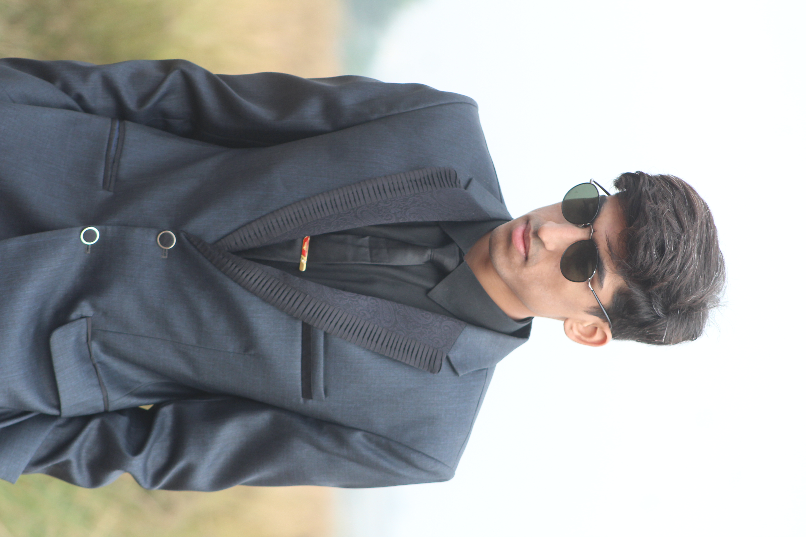

A showcase of modern, responsive, and high-performance websites built for professional services and brand replication.
Developed a comprehensive professional website for **Malaika Alvi**, a clinical psychologist. The project scope included creating an empathetic user experience, clear service navigation, and a robust platform for client engagement.
Key Features: - Patient-centric information architecture. - Mobile-optimized appointment booking flow. - SEO-optimized content structure for better search visibility.
Utilized modern web standards to ensure accessibility (WCAG), performance, and a seamless cross-browser experience.

Muhammad Daanyal